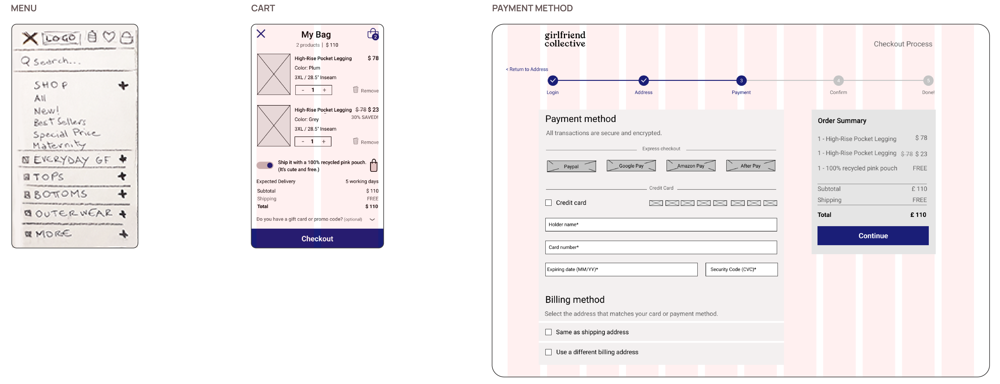

GIRLFRIEND COLLECTIVE
The brand is inclusive, but breaks that promise at checkout
Girlfriend Collective is a inclusive and sustainable activewear eCommerce.
Objective: Remove the barriers in the purchase flow of the online store, from finding a product to checkout.
Role: End-to-end Product Designer (UX/UI).
Timeline: 5 weeks.

BUSINESS PROBLEM
Girlfriend is an American brand that makes activewear from recycled plastic,
built on inclusivity and body positivity.
It went viral with a Facebook campaign
"Share the website with a friend to receive a free pair of leggings": 10,000 orders in 24 hours, stock sold out.
Yet the e-commerce contradicts that story.
Discounts are invisible, out-of-stock items aren't flagged, there is no wishlist,
live chat or sort by and checkout requires registration with no social login,
not even Facebook, the channel that made the brand famous.
Target: Millennials and Gen Z sensitive to environmental impact.
SOLUTION & RESULT
| The brand promises inclusivity. The UX extends it into the interface.
- Visible discounts with a homepage slider, a dedicated page and badges.
- Wishlist and Live Chat to support the decision and drive conversion.
- Guest checkout and Social Login to remove barriers at registration.

HEURISTIC REVIEW & COMPETITIVE ANALYSIS
| 5 heuristic violations that hide information needed to decide
Through a heuristic evaluation I found 5 violations that hide the information needed to decide.
The two most serious: promotions hidden with no labels or section, and no way to sort products by price, popularity or newest.
I then compared the site with 8 US competitors in sustainable activewear:
- 7 out of 8 display offers clearly. Girlfriend doesn't.
- 8 out of 8 let users sort results. Girlfriend doesn't.
- Only 3 out of 8 have a favourites feature. A gap but a less common one.
- Size range: Girlfriend has the widest, and only 2 competitors come close.
Inclusivity was Girlfriend Collective strength.
USER RESEARCH, PERSONAS & JOURNEYS
| An eco-conscious shopper who still needs to justify $60
I surveyed 54 women aged 20-40 based in the US:
- 53% are environmentally conscious, and sustainability builds trust in a brand.
- 69% shop in store, to try the product and assess the fit.
- 71% buy every 2-4 months: planned purchases, not impulse.
- 56% spend $21-40 on a pair of leggings.

USER FLOWS & SITEMAP
| The revised information architecture has solved the pain points that emerged in the user journeys and flows
- Findability Discounts, Stock and Sort by made visible.
- Decision support Wishlist to save products and Live Chat to solve doubts in real time.
- Checkout Guest Checkout and Social Login.

WIREFRAMES

USABILITY TESTING
| Did the fixes actually fix? Yes
I tested the prototype with 5 women aged 25-43 across four tasks spread between
desktop and mobile:
- Find a specific product
- Complete the checkout
- Contacting support
- Under 1 minute for both findability and checkout on desktop.
- Under 12 seconds to find discount sections and customer service on mobile.